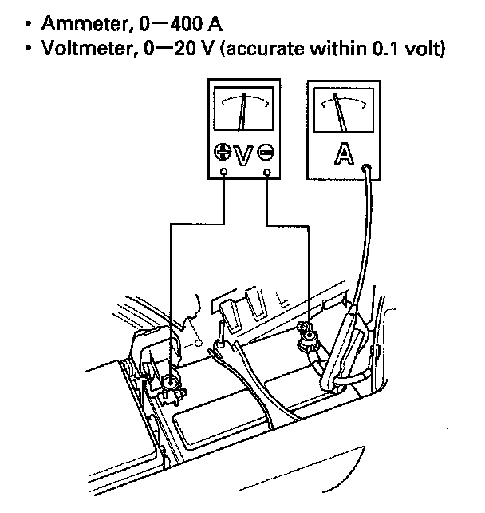
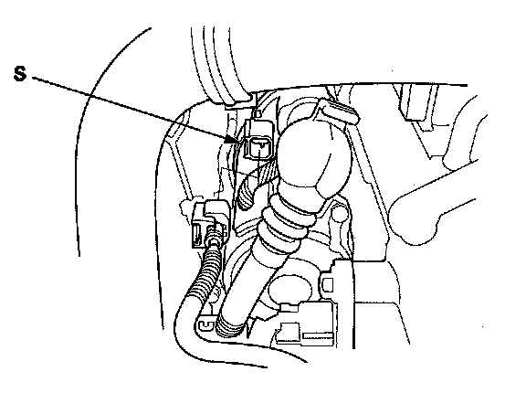

Component Tests and General Diagnostics
Starter System Circuit TroubleshootingNOTE:
- Air temperature must be between 59 and 100 °F (15 and 38 °C) during this procedure.
- After the inspection, you must reset the powertrain control module (PCM). Otherwise, the PCM will continue to stop the fuel injectors from functioning.
- The battery must be in good condition and fully charged.

1. Hook up the following equipment:
2. Connect the Honda Diagnostic System (HDS) to the data link connector (DLC)
3. Turn the ignition switch ON (II).
4. Make sure the HDS communicates with the vehicle and the PCM. If it doesn't communicate troubleshoot the DLC circuit
5. Select PGM-FI, INSPECTION, then ALL INJECTORS OFF on the HDS.
6. Set the parking brake, then with the shift lever in the N or P position, turn the ignition switch to START (III).
Does the starter crank the engine normally?
YES - The starting system is OK. Go to step 13.
NO - Go to step 7.
7. Check the battery condition. Check the electrical connections at the battery, the negative battery cable to the body, the engine ground cables, and the starter for looseness and corrosion. Then try cranking the engine again.
Does the starter crank the engine?
YES - Repairing the loose connection corrected the problem. The starting system is OK. Go to step 13.
NO - Check these items:
- If the starter will not crank the engine at all, go to step 8.
- If the starter cranks the engine erratically or too slowly, go to step 10.
- If the starter does not disengage from the torque converter ring gear when you release the key, replace the starter, or remove and disassemble it, and check for the following:
- Starter solenoid and switch malfunction
- Dirty drive gear or damaged overrunning clutch

8. Make sure the shift lever is in the N or P position, then disconnect the connector from the starter solenoid S terminal. Connect a jumper from the battery positive terminal to the solenoid S terminal.
Does the starter crank the engine?
YES - Go to step 9.
NO - Remove the starter, and repair or replace it as necessary.
9. Check the following items in the order listed until you find the problem:
- A blown STS (7.5 A) fuse in the auxiliary under-dash fuse holder 1 located below the driver's under-dash fuse/relay box.
- A blown STRLD (7.5 A) fuse in the auxiliary under-dash fuse holder 2 located below the driver's under-dash fuse/relay box.
- Check for an open or short in the WHT wire and connectors between the starter cut relay 1 and the main under-hood fuse box.
- Check for an open or short in the BRN wire and connectors between the starter cut relay 2, the PCM and the starter cut relay 1.
- Check for an open or short in the WHT wire, BLK/WHT wire, and connectors between the starter cut relay 2 and the starter.
- Check for a faulty ignition switch.
- Check for a faulty transmission range switch and connector.
- Check for a faulty starter cut relay 1 and the starter cut relay 2.
10. While cranking the engine, check the cranking voltage and the current draw.
Is the cranking voltage greater than or equal to 8.0 V and is the current draw less than or equal to 375 A?
YES - Go to step 11.
NO - Replace the starter, or remove and disassemble it, and check for the following:
- Drag in the starter armature
- Shorted armature winding
- Excessive drag in the engine
11. Check the engine speed while cranking the engine. Is the engine speed above 100 rpm?
YES - Go to step 12.
NO - Replace the starter, or remove and disassemble it, and check for the following:
- Open circuit in starter armature commutator segments
- Excessively worn starter brushes
- Open circuit in the starter brushes
- Dirty or damaged helical splines or drive gear
- Faulty drive gear clutch
12. Remove the starter, and inspect its drive gear and the torque converter ring gear for damage. Replace any damaged parts.
13. Select PCM reset to cancel ALL INJECTORS OFF on the HDS.